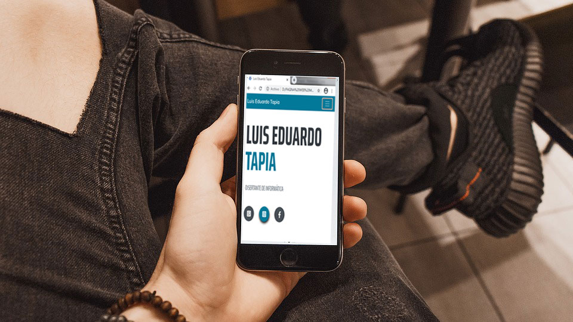

DISEÑO WEB
El diseño web es un área enfocada en el desarrollo de interfaces digitales, como el diseño de sitios y aplicaciones para web. Para ello, los diseñadores web crean las páginas utilizando lenguajes de marcado como HTML.
El diseño web implica trabajo relacionado con el layout y diseño de páginas online, así como la producción de contenido, aunque generalmente se aplica a la creación de sitios web. Los diseñadores web tienen en su trabajo tareas rutinarias relacionadas con la creación de un diseño para medios digitales y la creación de contenido.
El diseño web es una actividad que consiste en la planificación, diseño, implementación y mantenimiento de sitios web. No es simplemente la implementación del diseño convencional ya que se abarcan diferentes aspectos como el diseño gráfico web, diseño de interfaz y experiencia de usuario, como la navegabilidad, interactividad, usabilidad, arquitectura de la información; interacción de medios, entre los que podemos mencionar audio, texto, imagen, enlaces, video y la optimización de motores de búsqueda. A menudo muchas personas trabajan en equipos que cubren los diferentes aspectos del proceso de diseño, aunque existen algunos diseñadores independientes que trabajan solos.
Para que el curso de diseño web sea más ameno y facil de entender, especialmente para los principiantes en el tema, he decidido explicar desde los comienzos del diseño web hasta la actualidad. Obviamente todo es práctico pero es necesario explicar teóricamente algunos aspectos, sin llegar a ser aburrido y tedioso.
EN ESTE CURSO SE VERÁ EN PROFUNDIDAD EL SIGUIENTE CONTENIDO:
HTML: HyperText Markup Language (lenguaje de marcas de hipertexto) es el lenguaje que define la estructura de un sitio web. Es fundamental dentro del desarrollo web ya que es el primer lenguaje que debe aprenderse, y tener una base sólida marca la diferencia a la hora de crear sitios web.
CSS: (Hojas de estilo en cascada) es el lenguaje utilizado al momento de crear la parte visual de un sitio web. Con este lenguaje se crea todos los estilos necesarios para que el código HTML se vea igual al diseño que se quiere lograr.
HTML5: es la última versión de HTML y representa la nueva versión de HTML; con nuevos elementos, atributos y comportamientos.
CSS3: incluye las novedades de CSS.
RESPONSIVE DESIGNE: Permite adaptar cada sitio web a los diferentes formatos de dispositivos de acceso, smartphones, tablets, notebook, netbook, etc..
Haciendo un clic en la siguiente imagen se accederá a una página que muestra algunos ejemplos y proyectos que se diseñarán en clase.

A continuación se puede observar el programa de estudio:
Ver más Cursos...